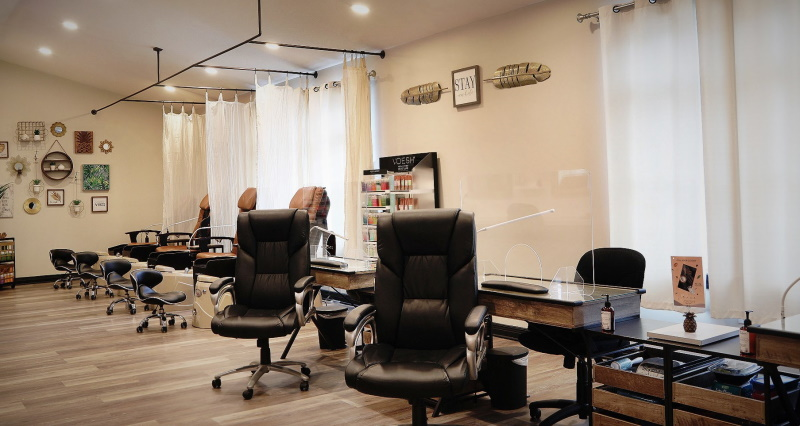
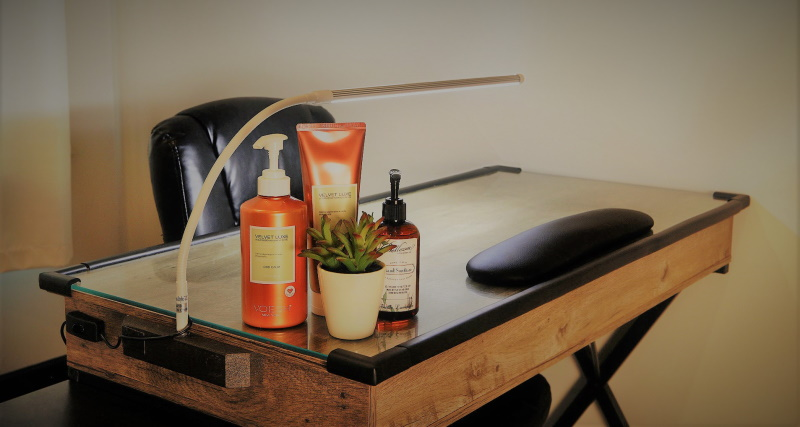

Tips and Toes


Prices are dependent on the level of the Nail Artist. Prices are Associate / Senior / Expert level Nail Artist. Manicures do not include Gel or enhancement removal unless stated.
*We do not remove acrylic.
Manicures
-
Classic Manicure$31 / 37 / 40
This manicure consists of filing and shaping of the nails, cuticle work, hand massage, and the application of fingernail polish if desired.
-
Gel Manicure with removal$48 / 53 / 58
Includes the removal of previous gel. Comes with shaping of the nails and cuticle work. This manicure uses a soft gel in the form of polish. The gel polish acts as an overlay on the nail that lasts for at least two weeks.
-
Gel Manicure without removal$44 / 49 / 53
Comes with shaping of the nails and cuticle work. This manicure uses a soft gel in the form of polish. The gel polish acts as an overlay on the nail that lasts for at least two weeks.
-
Gel Manicure Package of 5$245
Includes removal of previous gel
-
Dip Manicure with removal$58 / 63 / 68
Includes removal of previous dip. The dip powder nail technique offers added strength to your manicure. Involves dipping the nail into a polymer powder and finished with gel polish of your choice. The result is a stronger and can last longer than gel polish alone manicure.
-
Dip Manicure without removal$53 / 58 / 63
The dip powder nail technique offers added strength to your manicure. Involves dipping the nail into a polymer powder and finished with gel polish of your choice. The result is a stronger and can last longer than gel polish alone manicure.
-
Structure Gel Mani with Balance$71 / 75 / 80
Includes removal of previous gel. (We do not remove acrylic) A semi hard/structure gel manicure is an overlay service that aims to give a sturdy and strong enhancement without the use of nail tips or forms. For those who are struggling to get their nails to grow, this treatment creates a protective shell.
-
Structure Gel Mani$61 / 65 / 70
A semi hard/structure gel manicure is an overlay service that aims to give a sturdy and strong enhancement without the use of nail tips or forms. For those who are struggling to get their nails to grow, this treatment creates a protective shell.
-
Gel X Mani$71+ / 75+ / 82+
Gel extensions use hard gel or structure gel with an overlay to lengthen your nail. They are cured with a UV or LED light. Typically last between 2-4 weeks. Removal of previous Gel X is not included and must be booked. ** To preserve the health and strength of your natural nail, the removal process is crucial. You absolutely should not try to remove your own gel extensions at home. ++Price is for short length, Medium length $75/78, Long length $78/81
-
Removal Mani with Nail Treatment$44 / 45 / 49
This treatment includes cuticle removal, filing down and soaking off all gel products, shortening/shaping of nails with the use of Nail Nutritionist, a nail strengthener application to help kick start your natural nail journey.
-
Tiny Tips$27 / 27 / 30
Ages 12 and under can enjoy a nail trim, prep & polish.* Gel Polish is not included or recommended for ages 12 & under.
-
Buff and Shine for Tips$27 / 27 / 30
A 30-minute quick fix for your tips. Our Buff & Polish Change for Tips includes, nail buffing, a polish change or buff to a shine. *Does not include gel polish or gel removal.
-
Manly Mani$31 / 37 / 40
This manicure consists of filing and shaping of the nails, cuticle work, hand massage, and finished with a buff and shine of the nails if desired.
Pedicures
-
Classic Pedicure$48 / 53 / 56
Classic pedicures include a warm foot soak, steam towel, light callus removal with a foot file, sugar scrub, shortening/shaping of the nails, cuticle work, a light foot massage, and nail polish (if desired).**Does not include gel polish or gel removal.
-
Gel Pedicure$58 / 63 / 68
Gel pedicures include a warm foot soak, steam towel, light callus removal with a foot file, sugar scrub, shortening/shaping of the nails, cuticle work, a light foot massage with gel cured polish that dries instantly. Includes removal of old gel.
-
Glow Pedi$58 / 63 / 68
*Does not include gel polish or gel removal. Classic pedicure including a warm foot soak and a foot scrubbing with foot file, followed by clipping of the nails, shaping of the nails, your cuticles being pushed back, with a sugar scrub, mud mask wrapped with steam towels, and a leg massage, moisturizer and nail polish (if desired).
-
Bella Pedi$70 / 75 / 80
A luxury pedicure that targets dryness and calluses. This pedicure includes cuticle removal, shortening/shaping of nails, a callus treatment, sugar scrub, moisturizing mud mask wrapped in heated towels, and followed with a 15 minute mask treatment with our Collagen socks for hydration and soothing of calluses. Finish with a foot and leg massage and polish if desired.**Now includes gel polish and gel removal.
-
Tiny Toes$35 / 35 / 38
12 and under can enjoy a soak, nail trim, buff and polish.**Does not include gel polish or gel removal.
-
Buff & Shine of Toes$35 / 35 / 38
A 30-minute quick fix for your toes. Our Buff & Polish Change for Toes includes, nail buffing, a polish change or buff to a shine. **Does not include gel polish or gel removal.
-
Manly Pedi$48 / 53 / 56
Designed for His Foot care needs. This pedicures include a warm foot soak, steam towel, light callus removal with a foot file, sugar scrub, shortening/shaping of the nails, cuticle work, a light foot massage, and nails are buff to a shine if desired.
Additional Services
-
French Polish Add On$12
Add a French Polish to any of your nail appointments. **Not an individual service.
-
Gel or Dip Polish Removal Add On$20
When added to Manicure or Pedicure service.
-
Structure Base$10
Available as an add on: Semi-hard gel provides extra strength and flexibility to be used under any gel application on fingers nails.
-
Nail Art and Embellishment$15
Price is based per 15 minutes. Each additional 15 minutes is additional $15. **If you desire an intricate design, please book two nail art appointments with your manicure or pedicure service and leave a detailed note.
-
Collagen Gloves or Socks$12
Collagen Gloves and Collagen Socks with Argan Oil deliver an incredibly nourishing and moisturizing treatment for the hands and feet. Vegan collagen helps to boost elasticity, leaving skin smooth and supple.
-
Aroma Therapy Jelly Bath Add On$12
Jelly soak can be added to any Pedicure. Heat therapy will soothe aching joints and muscles. Active ingreditents work to open pores, eliminate toxins, remove dead skin cells and leave skin soft.